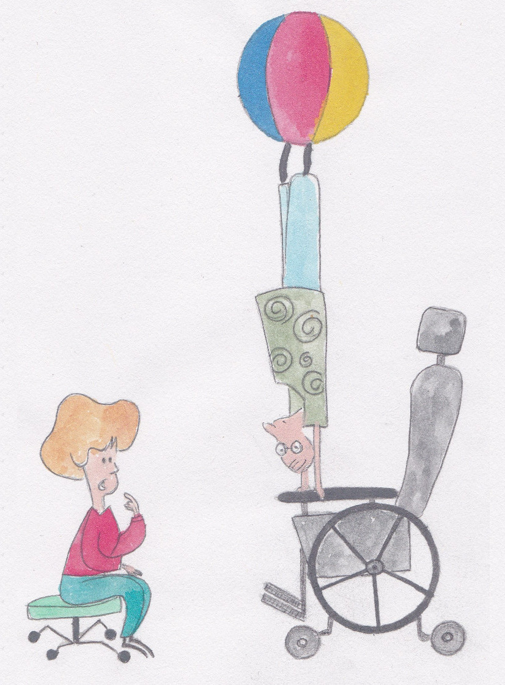
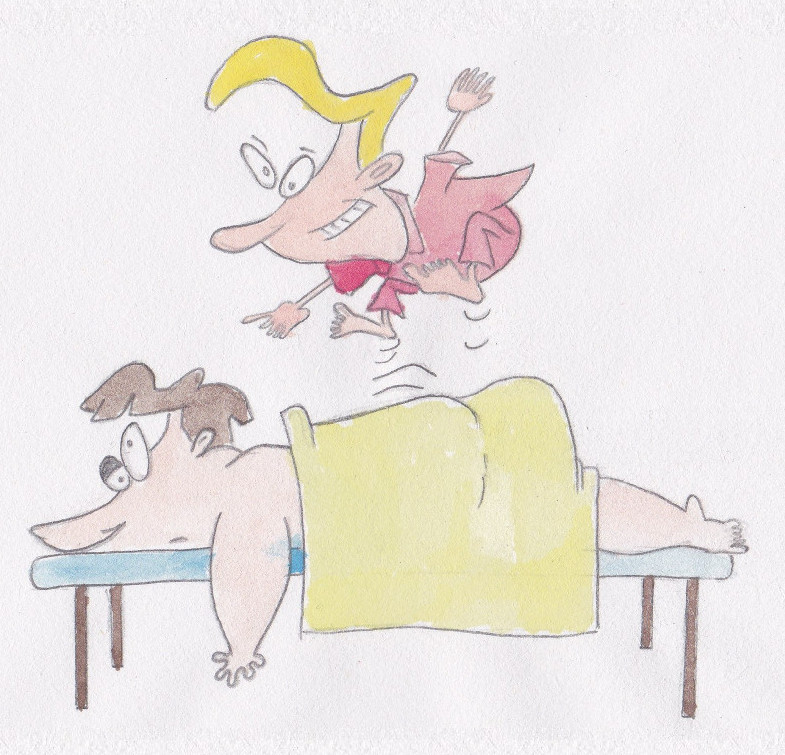
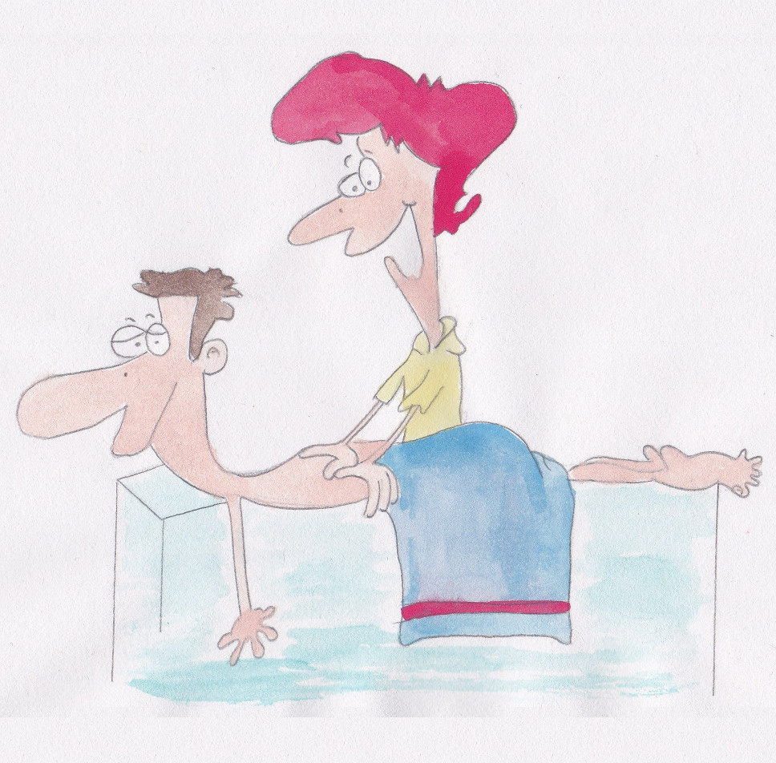
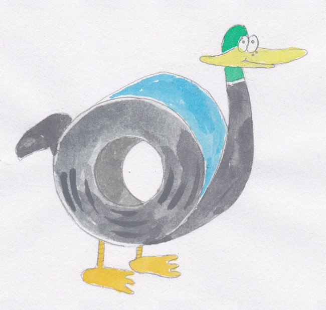

To be replaced by the nav-main.
Physiotherapie

Rückenschmerzen? Nackenschmerzen? Gelenksschmerzen? Fehlhaltung? Akute Verletzung? Oder frisch operiert?
Das Ziel der Physiotherapie ist es, Funktionsstörungen des Bewegungsapparates zu beseitigen,
natürliche Bewegungsabläufe wiederherzustellen und dadurch Ihre Symptome zu lindern und Ihnen einen schmerzfreien Alltag zu ermöglichen.
Dies erreichen wir durch gezielte aktive Übungen, welche individuell an Ihr Problem angepasst werden,
sowie passiven therapeutischen Maßnahmen zur Verbesserung von Bewegungseinschränkungen und zum Lösen von Verspannungen.
Nach Verletzungen oder Operationen erhalten Sie professionelle Begleitung auf Ihrem Weg zurück in Alltag, Beruf und Sport.
Preise:30 Minuten / 43€
45 Minuten / 62€
Heilmassage

Die Heilmassage ist die Behandlung von Haut, Bindegewebe, Sehnen und Muskeln durch Druck- und Zugreize.
Dadurch soll die Durchblutung von Organen und Gewebe angeregt werden.
Mit speziellen Grifftechniken werden dabei Reize auf Unterhaut, Muskulatur und tiefergelegenes Gewebe ausgeübt.
Preise:15 Minuten / 20€
25 Minuten / 33€
50 Minuten / 55€
Manuelle Lymphdrainage

Unter manueller Lymphdrainage versteht man die Aktivierung des Lymphabflusses
bzw. die Entstauung (Drainage) des Gewebes durch bestimmmte physiotherapeutische Techniken.
Preise:25 Minuten / 33€
50 Minuten / 55€
Kinesiotaping

Kinesiotapes sind bunte elastische Klebebänder, die zur Unterstützung von verletzter Muskulatur oder Sehnen auf die Haut aufgebracht werden.
Sie kommen vor allem im Sportbereich zum Einsatz, sind aber auch als ergänzende Therapiemaßnahme
zur Haltungsverbesserung oder Gelenksstabilisation geeignet.
Für die richtige Anwendung sind genaue anatomische Kenntnisse Voraussetzung.
Preis:1€ / 10cm